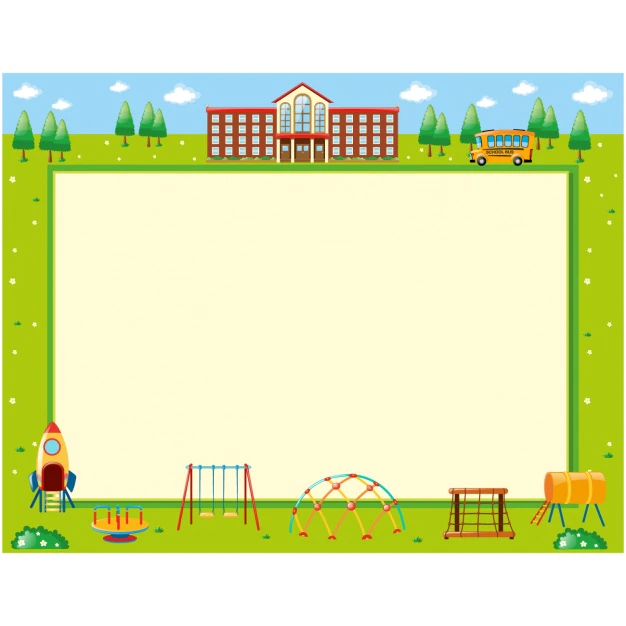
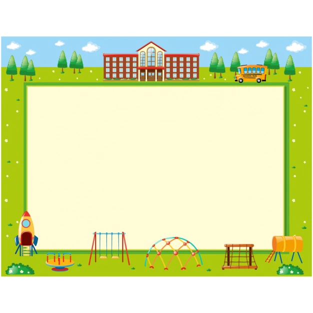

A school is an educational institution designed to provide learning spaces and learning environments for the teaching of students under the direction of teachers. Most countries have systems of formal education, which is sometimes compulsory.[2] In these systems, students progress through a series of schools. The names for these schools vary by country (discussed in the Regional terms section below) but generally include primary school for young children and secondary school for teenagers who have completed primary education. An institution where higher education is taught, is commonly called a university college or university. In addition to these core schools, students in a given country may also attend schools before and after primary (elementary in the U.S.) and secondary (middle school in the U.S.) education. Kindergarten or preschool provide some schooling to very young children (typically ages 3–5). University, vocational school, college or seminary may be available after secondary school. A school may be dedicated to one particular field, such as a school of economics or dance. Alternative schools may provide nontraditional curriculum and methods. Non-government schools, also known as private schools,[3] may be required when the government does not supply adequate or specific educational needs. Other private schools can also be religious, such as Christian schools, gurukula (Hindu schools), madrasa (Arabic schools), hawzas (Shi'i Muslim schools), yeshivas (Jewish schools), and others; or schools that have a higher standard of education or seek to foster other personal achievements. Schools for adults include institutions of corporate training, military education and training and business schools. Critics of school often accuse the school system of failing to adequately prepare students for their future lives,[4] of encouraging certain temperaments while inhibiting others,[5] of prescribing students exactly what to do, how, when, where and with whom, which would suppress creativity,[6] and of using extrinsic measures such as grades and homework, which would inhibit children's natural curiosity and desire to learn.[7] In ancient India, schools were in the form of Gurukuls. Gurukuls were traditional Hindu residential learning schools, typically the teacher's house or a monastery. Schools today are commonly known by the Sanskrit terms Vidyashram, Vidyalayam, Vidya Mandir, Vidya Bhavan in India.[13][14] In southern languages, it is known as Pallikoodam or PaadaSaalai. During the Mughal rule, Madrasahs were introduced in India to educate the children of Muslim parents. British records show that indigenous education was widespread in the 18th century, with a school for every temple, mosque, or village in most regions. The subjects taught included Reading, Writing, Arithmetic, Theology, Law, Astronomy, Metaphysics, Ethics, Medical Science, and Religion.

 


Address
Naik International School
Bandra west,Mumbai,400096
Tel: + 91 22 35637000 / 7001
Fax: + 91 22 35637099
Email: info@dais.edu.in
Website: www.dais.edu.in/
For Admissions
Please email your queries to
admissions@dais.edu.in